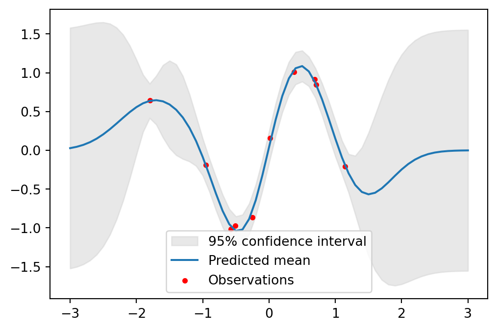
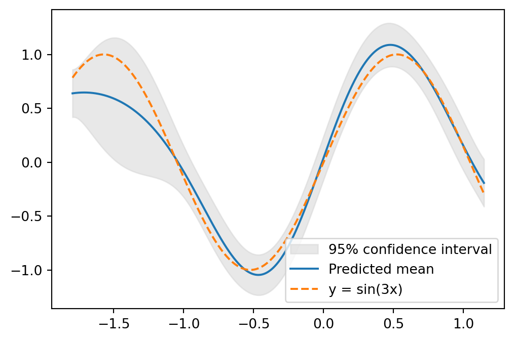
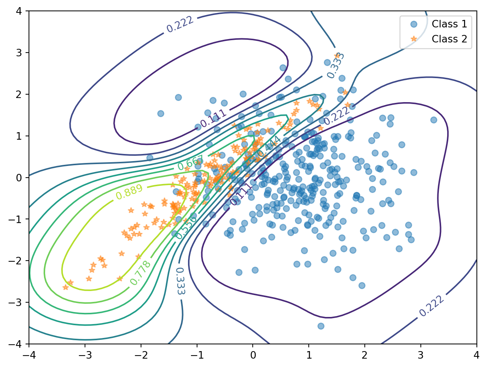

Code
import numpy as np
N = 10
np.random.seed(1234)
x = np.random.randn(N,1) * 0.8
y = np.sin(3*x) + np.random.randn(N,1) * 0.09
xs = np.linspace(-3,3,61).reshape(-1,1)A Blog Entry on Bayesian Computation by an Applied Mathematician
$$
$$
Gauss 過程を用いた推論を実行するライブラリには，Matlab パッケージである GPML や，Python における GPy がある．

データ \(x_1,\cdots,x_{N},N=100\) として，\(\mathrm{N}(0,0.8^2)\) に従う乱数を用意する．これに対して， \[ y_i=\sin(3x_i)+\epsilon, \] \[ \epsilon\sim\mathrm{N}(0,0.09^2), \] を通じて \(y_1,\cdots,y_N\) を生成する．
import numpy as np
N = 10
np.random.seed(1234)
x = np.random.randn(N,1) * 0.8
y = np.sin(3*x) + np.random.randn(N,1) * 0.09
xs = np.linspace(-3,3,61).reshape(-1,1)この非線型関数 \(\sin\) を，Gauss 過程回帰がどこまで復元できるかが実験の主旨である．
GPy を用いた場合GPy を用いて Gauss 過程回帰を行うには，GPy.models.gp_regression モジュールの GPRegression クラス
class GPRegression(X, Y, kernel=None, Y_metadata=None, normalizer=None, noise_var=1.0, mean_function=None)を用いる．ソースコードは こちら．
引数のカーネル kernel は PGPy kernel オブジェクトを取り，デフォルトは rbf カーネルである．我々も RBF カーネル を用いることとする．これは GPy パッケージでは GPy.kern.src.rbf モジュールの RBF クラスで提供されている：
class RBF(input_dim, variance=1.0, lengthscale=None, ARD=False, active_dims=None, name='rbf', useGPU=False, inv_l=False)ソースコードは こちら．
モデルオブジェクトを初期化した後は次のように進む
optimize メソッド でハイパーパラメータを最適化する．
optimize(optimizer=None, start=None, messages=False, max_iters=1000, ipython_notebook=True, clear_after_finish=False, **kwargs)これはインスタンスの self.log_likelihood と self.log_likelihood_gradient を用いて，負の対数尤度を最小化する形で行われる．
predict メソッド でテスト点での予測を行う．
predict(Xnew, full_cov=False, Y_metadata=None, kern=None, likelihood=None, include_likelihood=True)返り値は事後平均と事後分散を numpy.ndarray として返す．
matplotlib を用いて予測の結果をプロットする．
import GPy
import matplotlib.pyplot as plt
kernel = GPy.kern.RBF(input_dim=1, variance=1.0)
model = GPy.models.GPRegression(x, y, kernel)
model.optimize()
mu, var = model.predict(xs)
# テスト点での平均と95%信頼区間のプロット
upper = mu + 1.96*np.sqrt(var)
lower = mu - 1.96*np.sqrt(var)
plt.fill_between(xs[:,0], lower[:,0], upper[:,0], color='lightgray', label='95% confidence interval', alpha=0.5)
plt.plot(xs, mu, label='Predicted mean')
plt.scatter(x, y, c='r', label='Observations', s=10)
plt.legend()
plt.show()
import numpy as np
import GPy
import matplotlib.pyplot as plt
kernel = GPy.kern.RBF(input_dim=1, variance=1.0)
model = GPy.models.GPRegression(x, y, kernel)
model.optimize()
xs = np.linspace(x.min(), x.max(), 1000)[:, None]
mu, var = model.predict(xs)
upper = mu + 1.96 * np.sqrt(var)
lower = mu - 1.96 * np.sqrt(var)
fig, ax = plt.subplots(figsize=(6, 4)) # グラフサイズを小さく
# 背景を白に
ax.set_facecolor('white')
# グラフ領域を削除
ax.patch.set_visible(False)
# 軸を細く
ax.spines['bottom'].set_linewidth(0.5)
ax.spines['left'].set_linewidth(0.5)
# メモリを非表示
ax.tick_params(axis='both', which='both', length=0, labelleft=False, labelbottom=False, left=False, bottom=False)
# 軸ラベルを削除
ax.set_xlabel('')
ax.set_ylabel('')
# 凡例を非表示
ax.legend().set_visible(False)
# データプロット
ax.fill_between(xs[:, 0], lower[:, 0], upper[:, 0], color='lightgray', alpha=0.5)
ax.plot(xs[:, 0], mu[:, 0], color='k', lw=1)
ax.scatter(x[:, 0], y[:, 0], c='b', s=30)
plt.tight_layout(pad=0.2)
plt.show() /var/folders/gx/6w78f6997l5___173r25fp3m0000gn/T/ipykernel_9031/3363038710.py:35: UserWarning:No artists with labels found to put in legend. Note that artists whose label start with an underscore are ignored when legend() is called with no argument.
特に \([-2,2]\) の区間において，元の関数 \(\sin\) をよく復元できていることが分かる．実際，\(y=\sin(3x)\) と重ねてプロットすると次の通り：

scikit-learn を用いた場合本質的には Gauss 過程回帰と変わらないが，回帰の場合と変え得る．
ここでは， \[ m_1:=\begin{pmatrix}3/4\\0\end{pmatrix},\quad m_2:=\begin{pmatrix}-3/4\\0\end{pmatrix}, \] \[ \Sigma_1:=\begin{pmatrix}1&0\\0&1\end{pmatrix},\quad\Sigma_2:=\begin{pmatrix}1&0.95\\0.95&1\end{pmatrix}, \] とし，\(\mathrm{N}_2(m_1,\Sigma_1)\) から \(n_1:=320\) データ，\(\mathrm{N}_2(m_2,\Sigma_2)\) から \(n_2:=160\) データを生成する：
n1, n2 = 320, 160
S1 = np.eye(2)
S2 = np.array([[1, 0.95], [0.95, 1]])
m1 = np.array([0.75, 0])
m2 = np.array([-0.75, 0])
x1 = np.random.multivariate_normal(m1, S1, n1)
x2 = np.random.multivariate_normal(m2, S2, n2)
x = np.vstack((x1, x2))
y1 = -np.ones(n1)
y2 = np.ones(n2)
y = np.concatenate((y1, y2)).reshape(-1,1)
plt.plot(x1[:, 0], x1[:, 1], 'o', label='Class 1')
plt.plot(x2[:, 0], x2[:, 1], '*', label='Class 2')
plt.legend()
plt.show()\(n_1:n_2=2:1\) であるから，このデータは Gauss 混合モデル \[ \frac{2}{3}\phi(x;m_1,\Sigma_1)+\frac{1}{3}\phi(x;m_2,\Sigma_2) \tag{1}\] からのデータと見れる．ただし，\(\phi(x;m,\Sigma)\) は \(\mathrm{N}_2(\mu,\Sigma)\) の密度関数とした．
サンプリング点は \([-4,4]^2\) 内の幅 \(0.1\) の格子点とする：
t1, t2 = np.meshgrid(np.arange(-4, 4.1, 0.1), np.arange(-4, 4.1, 0.1))
t = np.column_stack([t1.flat, t2.flat])点 \(x\) でモデル 1 からのデータが観測されたとき，これがクラス \(1,2\) からのものである確率 \(p_1,p_2\) は \[ \begin{align*} p_1&=\frac{n_1}{n_1+n_2}\phi(x;m_1,\Sigma_1)\\ &=\frac{1}{2\pi(n_1+n_2)}\cdot n_1\frac{e^{-\frac{1}{2}(x-m_1)^\top\Sigma_1^{-1}(x-m_1)}}{\sqrt{\det\Sigma_1}} \end{align*} \] \[ p_2= \frac{1}{2\pi(n_1+n_2)}\cdot n_2\frac{e^{-\frac{1}{2}(x-m_2)^\top\Sigma_2^{-1}(x-m_2)}}{\sqrt{\det\Sigma_2}} \] である．
よって，\(x\in[-4,4]^2\) がクラス \(2\) からのものである確率を，等高線 (contour) としてプロットすると，次の通りになる：
invS1 = np.linalg.inv(S1)
invS2 = np.linalg.inv(S2)
detS1 = np.linalg.det(S1)
detS2 = np.linalg.det(S2)
tmm1 = t - m1
p1 = n1 * np.exp(-0.5 * np.sum(tmm1.dot(invS1) * tmm1, axis=1)) / np.sqrt(detS1)
tmm2 = t - m2
p2 = n2 * np.exp(-0.5 * np.sum(tmm2.dot(invS2) * tmm2, axis=1)) / np.sqrt(detS2)
posterior = p2 / (p1 + p2)
# 等確率等高線のプロット
contour_levels = np.arange(0.1, 1, 0.1)
plt.contour(t1, t2, posterior.reshape(t1.shape), levels=contour_levels)
# データポイントのプロット
plt.plot(x1[:, 0], x1[:, 1], 'o', label='Class 1', alpha=0.5)
plt.plot(x2[:, 0], x2[:, 1], '*', label='Class 2', alpha=0.5)
plt.legend()
plt.show()
平均は \(0\) とし，共分散関数は 関連度自動決定 (ARD: Autonatic Relevance Determination) (MacKay, 1994), (Neal, 1996, p. 16) を用いる．
これは，２つの入力 \(x_1,x_2\) が異なる重要度を持つ場合，それぞれの入力に対するスケールパラメータを導入する手法である．
これは，GPy.kern.RBF 関数のキーワード引数 ARD=True を通じて実装できる：
import time
start_time = time.time()
meanfunc = GPy.mappings.Constant(2,1)
kernel = GPy.kern.RBF(input_dim=2, ARD=True)
model = GPy.models.GPClassification(x, y, kernel=kernel, mean_function=meanfunc)
model.optimize()
# テストデータセットに対する予済分布の計算
y_pred, _ = model.predict(t)
end_time = time.time()
# 予測確率の等高線プロット
plt.figure(figsize=(8, 6))
plt.plot(x1[:,0], x1[:,1], 'o', label='Class 1', alpha=0.5)
plt.plot(x2[:,0], x2[:,1], '*', label='Class 2', alpha=0.5)
contour = plt.contour(t1, t2, y_pred.reshape(t1.shape), levels=np.linspace(0, 1, 10))
plt.clabel(contour, inline=1, fontsize=10)
plt.legend()
plt.show()
elapsed_time = end_time - start_time
print(f"実行時間: {elapsed_time:.1f} 秒")
実行時間: 14.3 秒図 1 の真の構造の特徴を捉えていることが判る．
Documentation for GPML Matlab Code version 4.2 3c 節を参考にした．↩︎
Documentation for GPML Matlab Code version 4.2 4e 節を参考にした．↩︎